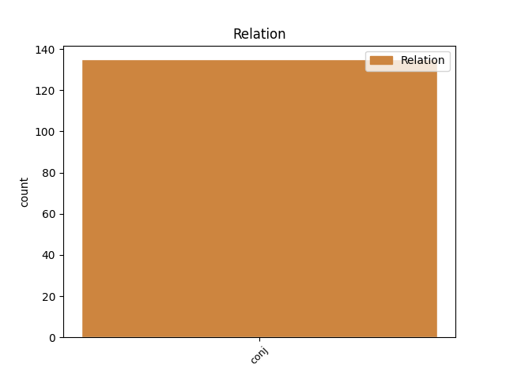
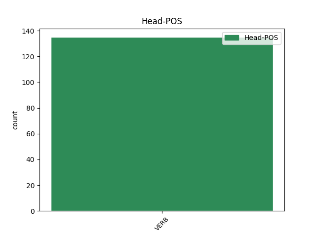
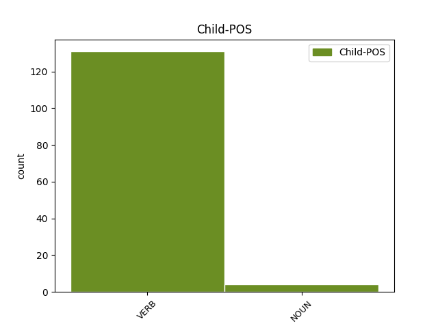

Distribution of features within this leaf



Agreement Rules sorted by frequency.
- When the dependent token is the conjunct(conj) of the head token, and the head token is VERB and the dependent token is VERB.
1 Treuzlizherennet _ _ _ _ 0 _ _ _
2 u _ _ _ _ 0 _ _ _
3 Distaget distage VERB _ Mood=Ind|Tense=Pres|VerbForm=Fin|Voice=Pass 0 _ _ _
4 /u/ _ _ _ _ 0 _ _ _
5 pe _ _ _ _ 0 _ _ _
6 ú _ _ _ _ 0 _ _ _
7 Distaget distage VERB _ Mood=Ind|Tense=Pres|VerbForm=Fin|Voice=Pass 3 conj _ _
8 /uː/. _ _ _ _ 0 _ _ _
1 Graet graet VERB _ Mood=Ind|Number=Sing|Person=3|Tense=Pres|VerbForm=Fin 0 _ _ _
2 e _ _ _ _ 0 _ _ _
3 vez vez NOUN _ Mood=Ind|Number=Sing|Person=3|Tense=Pres|VerbForm=Fin 1 conj _ _
4 deuzoutañ _ _ _ _ 0 _ _ _
5 « _ _ _ _ 0 _ _ _
6 o _ _ _ _ 0 _ _ _
7 mar _ _ _ _ 0 _ _ _
8 interior _ _ _ _ 0 _ _ _
9 » _ _ _ _ 0 _ _ _
10 ( _ _ _ _ 0 _ _ _
11 ar _ _ _ _ 0 _ _ _
12 mor _ _ _ _ 0 _ _ _
13 diabarzh _ _ _ _ 0 _ _ _
14 ) _ _ _ _ 0 _ _ _
15 . _ _ _ _ 0 _ _ _
Disagree Examples:
1 Marc'hadourien _ _ _ _ 0 _ _ _
2 oant _ _ _ _ 0 _ _ _
3 ( _ _ _ _ 0 _ _ _
4 laeron _ _ _ _ 0 _ _ _
5 - _ _ _ _ 0 _ _ _
6 vor _ _ _ _ 0 _ _ _
7 ivez _ _ _ _ 0 _ _ _
8 ) _ _ _ _ 0 _ _ _
9 , _ _ _ _ 0 _ _ _
10 ha _ VERB _ Mood=Ind|Number=Sing|Person=3|Tense=Pres|VerbForm=Fin 0 _ _ _
11 traoù _ _ _ _ 0 _ _ _
12 a _ _ _ _ 0 _ _ _
13 bep _ _ _ _ 0 _ _ _
14 seurt _ _ _ _ 0 _ _ _
15 a _ _ _ _ 0 _ _ _
16 gaver _ _ _ _ 0 _ _ _
17 en _ _ _ _ 0 _ _ _
18 o _ _ _ _ 0 _ _ _
19 bezioù _ _ _ _ 0 _ _ _
20 , _ _ _ _ 0 _ _ _
21 degaset degas VERB _ Tense=Past|VerbForm=Part 10 conj _ _
22 ganto _ _ _ _ 0 _ _ _
23 da _ _ _ _ 0 _ _ _
24 heul _ _ _ _ 0 _ _ _
25 o _ _ _ _ 0 _ _ _
26 beajoù _ _ _ _ 0 _ _ _
27 . _ _ _ _ 0 _ _ _
1 War _ _ _ _ 0 _ _ _
2 a _ _ _ _ 0 _ _ _
3 seblant _ _ _ _ 0 _ _ _
4 e _ _ _ _ 0 _ _ _
5 veze veze VERB _ Mood=Ind|Number=Sing|Person=3|Tense=Imp|VerbForm=Fin 0 _ _ _
6 implijet implijre VERB _ Tense=Past|VerbForm=Part 5 conj _ _
7 evit _ _ _ _ 0 _ _ _
8 estalammadennoù _ _ _ _ 0 _ _ _
9 . _ _ _ _ 0 _ _ _
1 Kregiñ _ _ _ _ 0 _ _ _
2 a _ _ _ _ 0 _ _ _
3 ra _ _ _ _ 0 _ _ _
4 an _ _ _ _ 0 _ _ _
5 urzh _ _ _ _ 0 _ _ _
6 - _ _ _ _ 0 _ _ _
7 se _ _ _ _ 0 _ _ _
8 gant _ _ _ _ 0 _ _ _
9 ʾalif _ _ _ _ 0 _ _ _
10 , _ _ _ _ 0 _ _ _
11 bāʾ _ _ _ _ 0 _ _ _
12 ǧīm _ _ _ _ 0 _ _ _
13 ha _ _ _ _ 0 _ _ _
14 dāl _ _ _ _ 0 _ _ _
15 , _ _ _ _ 0 _ _ _
16 a _ _ _ _ 0 _ _ _
17 ya _ _ _ _ 0 _ _ _
18 da _ _ _ _ 0 _ _ _
19 sevel _ _ _ _ 0 _ _ _
20 ar _ _ _ _ 0 _ _ _
21 ger _ _ _ _ 0 _ _ _
22 abjad _ _ _ _ 0 _ _ _
23 ; _ _ _ _ 0 _ _ _
24 graet gra VERB _ Tense=Past|VerbForm=Part 0 _ _ _
25 e _ _ _ _ 0 _ _ _
26 vez vez VERB _ Mood=Ind|Tense=Pres|VerbForm=Fin|Voice=Pass 24 conj _ _
27 abjad _ _ _ _ 0 _ _ _
28 pe _ _ _ _ 0 _ _ _
29 eus _ _ _ _ 0 _ _ _
30 ul _ _ _ _ 0 _ _ _
31 lizherenneg _ _ _ _ 0 _ _ _
32 na _ _ _ _ 0 _ _ _
33 verk _ _ _ _ 0 _ _ _
34 nemet _ _ _ _ 0 _ _ _
35 ar _ _ _ _ 0 _ _ _
36 c’hensonennoù _ _ _ _ 0 _ _ _
37 , _ _ _ _ 0 _ _ _
38 semitek _ _ _ _ 0 _ _ _
39 peurliesañ _ _ _ _ 0 _ _ _
40 ha _ _ _ _ 0 _ _ _
41 deuet _ _ _ _ 0 _ _ _
42 diwar _ _ _ _ 0 _ _ _
43 ar _ _ _ _ 0 _ _ _
44 fenikeg _ _ _ _ 0 _ _ _
45 , _ _ _ _ 0 _ _ _
46 pe _ _ _ _ 0 _ _ _
47 eus _ _ _ _ 0 _ _ _
48 al _ _ _ _ 0 _ _ _
49 lizherennoù _ _ _ _ 0 _ _ _
50 niverel _ _ _ _ 0 _ _ _
51 arabek _ _ _ _ 0 _ _ _
52 . _ _ _ _ 0 _ _ _
1 Transliterated transliterated VERB _ Tense=Past|VerbForm=Part 0 _ _ _
2 e _ _ _ _ 0 _ _ _
3 Distaget distage VERB _ Mood=Ind|Number=Sing|Person=3|Tense=Pres|VerbForm=Fin 1 conj _ _
4 /ɛ/ _ _ _ _ 0 _ _ _
5 pe _ _ _ _ 0 _ _ _
6 é _ _ _ _ 0 _ _ _
7 Distaget _ _ _ _ 0 _ _ _
8 /ɛː/. _ _ _ _ 0 _ _ _
1 Ne _ _ _ _ 0 _ _ _
2 oa _ VERB _ Form=Ecl|Mood=Ind|Tense=Past 0 _ _ _
3 nemet _ _ _ _ 0 _ _ _
4 ur _ _ _ _ 0 _ _ _
5 rener _ _ _ _ 0 _ _ _
6 en _ _ _ _ 0 _ _ _
7 impalaeriezh _ _ _ _ 0 _ _ _
8 , _ _ _ _ 0 _ _ _
9 ar _ _ _ _ 0 _ _ _
10 Sultan _ _ _ _ 0 _ _ _
11 , _ _ _ _ 0 _ _ _
12 anvet _ _ _ _ 0 _ _ _
13 ar _ _ _ _ 0 _ _ _
14 Padichah _ _ _ _ 0 _ _ _
15 ( _ _ _ _ 0 _ _ _
16 Aotrou _ _ _ _ 0 _ _ _
17 ar _ _ _ _ 0 _ _ _
18 roueed _ _ _ _ 0 _ _ _
19 ) _ _ _ _ 0 _ _ _
20 ha _ _ _ _ 0 _ _ _
21 pa _ _ _ _ 0 _ _ _
22 ne _ _ _ _ 0 _ _ _
23 vez _ VERB _ Mood=Ind|Tense=Pres 2 conj _ _
24 ket _ _ _ _ 0 _ _ _
25 an _ _ _ _ 0 _ _ _
26 holl _ _ _ _ 0 _ _ _
27 traou _ _ _ _ 0 _ _ _
28 en _ _ _ _ 0 _ _ _
29 e _ _ _ _ 0 _ _ _
30 dorn _ _ _ _ 0 _ _ _
31 . _ _ _ _ 0 _ _ _